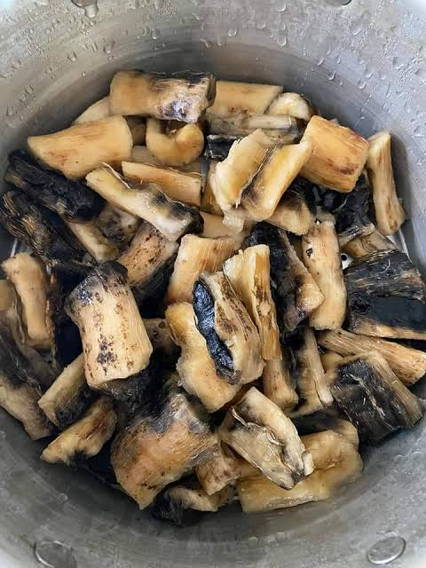
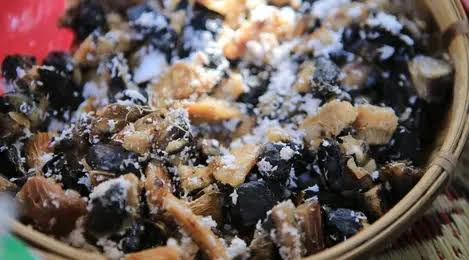
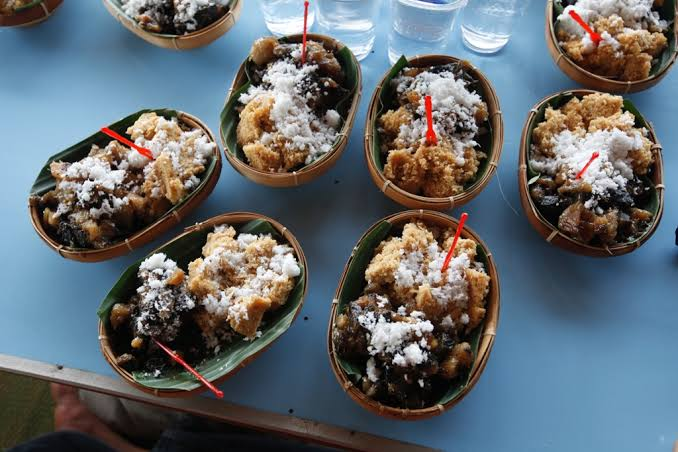

Resep Kakombu Makanan Khas Muna
- Bahan-Bahan
- Ubi kayu fermentasi
- Kelapa tua yang sudah di parut
- Resep
- 250 gram kakombo (singkong yang telah dikeringkan)
- Kelapa parut secukupnya
- sejumput garam
- ikan asin (goreng)
- Cara membuat
- potong kakombu kecil-kecil lalu rendam dengan air selama semalam. kemudian tiriskan kakombu
- siapkan panci kukusan, dan kukus kakombu selama 15-30 menit dengan api sedang

- jika sudah matang, angkat biarkan agak dingin. kemudian campurkan dengan garam secukupnya.

- sajikan kakombu dengan kelapa parutdan ikan asin.

Jangan Lupa Ikuti
Lokasi saat ini